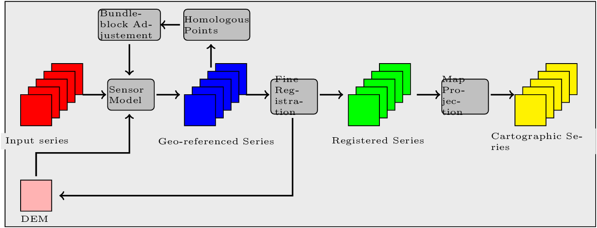
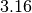

Residual registration¶
Image registration is a fundamental problem in image processing. The aim is to align two or more images of the same scene often taken at different times, from different viewpoints, or by different sensors. It is a basic step for orthorectification, image stitching, image fusion, change detection, and others. But this process is also critical for stereo reconstruction process to be able to obtain an accurate estimation of epipolar geometry.
Sensor model is generally not sufficient to provide image registrations. Indeed, several sources of geometric distortion can be contained in optical remote sensing images including earth rotation, platform movement, non linearity, etc.
They result in geometric errors on scene level, image level and pixel level. It is critical to rectify the errors before a thematic map is generated, especially when the remote sensing data need to be integrated together with other GIS data.
This figure illustrates the generic workflow in the case of image series registration:
We will now illustrate this process by applying this workflow to register two images. This process can be easily extended to perform image series registration.
The aim of this example is to describe how to register a Level 1 QuickBird image over an orthorectify Pleiades image over the area of Toulouse, France.
{kind=link}
{kind=link}
Figure 4.10: From left to right: Pleiades ortho-image, and original QuickBird image over Toulouse
Extract metadata from the image reference¶
We first dump geometry metadata of the image we want to refine in a text file. In OTB, we use the extension .geom for this type of file. As you will see the application which will estimate a refine geometry only needs as input this metadata and a set of homologous points. The refinement application will create a new .geom file containing refined geometry parameters which can be used after for reprojection for example.
The use of external .geom file is available in OTB since release . See here for more information.
otbcli_ReadImageInfo -in slave_image
-outkwl TheGeom.geom
Extract homologous points from images¶
The main idea of the residual registration is to estimate an second transformation (after the application of sensors model).
The homologous point application use interest point detection method to get a set of point which match in both images.
The basic idea is to use this set of homologous points and estimate with them a residual transformation between the two images.
There is a wide variety of keypoint detectors in the literature, and they allow for the detection and description of local features in images. These algorithms provide for each interesting point a “feature description”. This descriptor has the property to be invariant to image translation, scaling, and rotation, partially invariant to illumination changes and robust to local geometric distortion. keypoints. Features extracted from the input images are then matched against each other. These correspondences are then used to create the homologous points.
SIFT or SURF keypoints can be computed in the application. The band on which keypoints are computed can be set independently for both images.
The application offers two modes:
- the first is the full mode where keypoints are extracted from the full extent of both images (please note that in this mode large image file are not supported).
- The second mode, called geobins, allows for the set-up of spatial binning so as to get fewer points spread across the entire image. In this mode, the corresponding spatial bin in the second image is estimated using geographical transform or sensor modeling, and is padded according to the user defined precision.
Moreover, in both modes the application can filter matches whose co-localization in the first image exceed this precision. Finally, the elevation parameters allow to deal more precisely with sensor modelling in case of sensor geometry data. The outvector option allows for the creation of a vector file with segments corresponding to the localization error between the matches.
Finally, with the 2wgs84 option, you can match two sensor geometry images or a sensor geometry image with an ortho-rectified reference. In all cases, you get a list of ground control points spread all over your image.
otbcli_HomologousPointsExtraction -in1 slave_image
-in2 reference_image
-algorithm surf
-mode geobins
-mode.geobins.binstep 512
-mode.geobins.binsize 512
-mfilter 1
-precision 20
-2wgs84 1
-out homologous_points.txt
-outvector points.shp
-elev.dem dem_path/SRTM4-HGT/
-elev.geoid OTB-Data/Input/DEM/egm96.grd
Note that for a proper use of the application, elevation must be correctly set (including DEM and geoid file).
Geometry refinement using homologous points¶
Now that we can use this set of tie points to estimate a residual transformation.For this we use the dedicated application called RefineSensorModel. This application make use of OSSIM capabilities to align the sensor model.
It reads the input geometry metadata file (.geom) which contains the sensor model information that we want to refine and the text file (homologous_points.txt) containing the list of ground control point. It performs a least-square fit of the sensor model adjustable parameters to these tie points and produces an updated geometry file as output (the extension which is always use is .geom)
The application can provide as well an optional ground control points based statistics file and a vector file containing residues that you can display in a GIS software.
Please note again that for a proper use of the application, elevation must be correctly set (including DEM and geoid file). The map parameters sets a map projection in which the accuracy will be estimated (in meters).
Accuracy values are provided as output of the application (computed using tie points location) and allow also to control the precision of the estimated model.
otbcli_RefineSensorModel -elev.dem dem_path/SRTM4-HGT/
-elev.geoid OTB-Data/Input/DEM/egm96.grd
-ingeom slave_image.geom
-outgeom refined_slave_image.geom
-inpoints homologous_points.txt
-outstat stats.txt
-outvector refined_slave_image.shp
Orthorectify image using the affine geometry¶
Now we will show how we can use this new sensor model. In our case we’ll use this sensor model to orthorectify the image over the Pléiades reference. Orfeo ToolBox offers since version 3.16 the possibility to use hrefhttp://wiki.orfeo-toolbox.org/index.php/ExtendedFileNameextend image path to use different metadata file as input. That’s what we are going to use to orthorectify the QuickBird image using the .geom file obtained by the RefineSensorModel applications. over the first one using for the second image estimated sensor model which take into account the original sensor model of the slave and which also fit to the set of tie points.
otbcli_OrthoRectification -io.in slave_image?&geom=TheRefinedGeom.geom
-io.out ortho_slave_image
-elev.dem dem_path/SRTM4-HGT/
-elev.geoid OTB-Data/Input/DEM/egm96.grd
As a result, if you’ve got enough homologous points in images and control that the residual error between the set of tie points and the estimated sensor model is small, you must achieve a good registration now between the 2 rectified images. Normally far better than ’only’ performing separate orthorectification over the 2 images.
This methodology can be adapt and apply in several cases, for example:
- register stereo pair of images and estimate accurate epipolar geometry
- registration prior to change detection